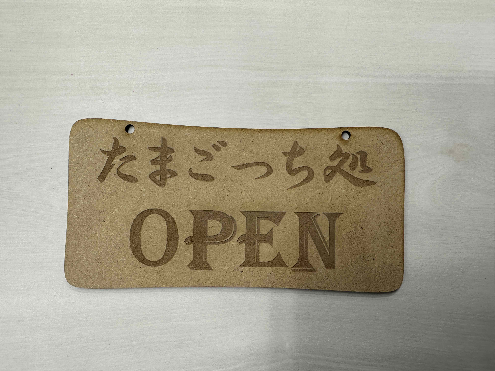
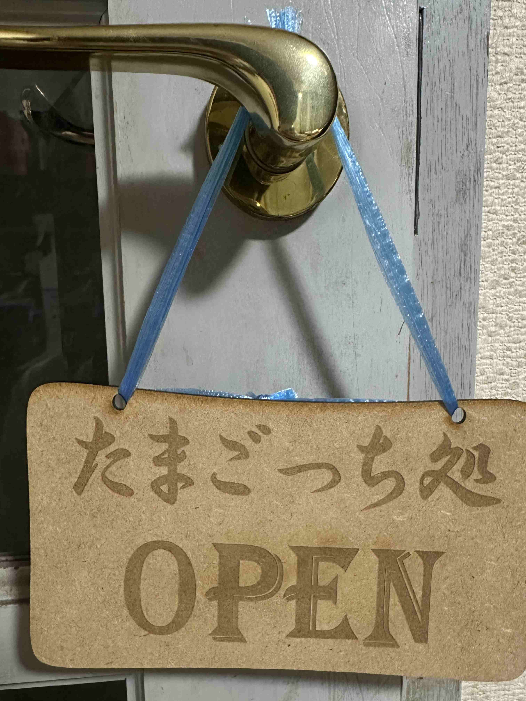

Design for others
班で取り組んだ問題
班のメンバーが発見した、街中でたまごっちをしている人について考えることにしました。
外でたまごっちをしてもおかしいと思われないためには喫煙所的な感じでたまごっちをするためのエリアを作ればいいとなり、そのための看板を作ることをきめました。
作ったもの


説明
レーザーカッティングを使用して木製のおしゃれな感じの看板を作りました。
喫煙所というよりは喫茶店の看板をイメージしてたまごっち処を作りました。
オシャレなフォントを選び、パット見ではたまごっちをする場所だと気づかれないような、目立ちすぎないような看板にしました。